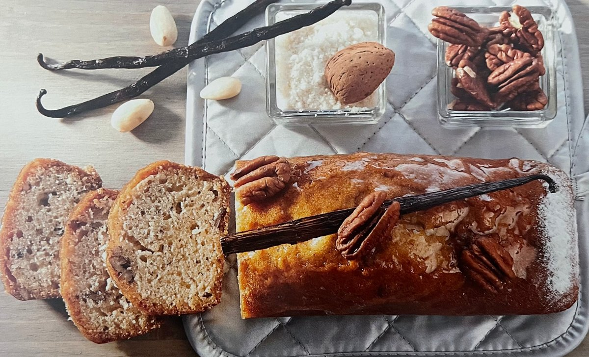

Cake pécan vanille
Ingredients
×
- 310 g de sucre
- 17 cl d'eau
- 2 gousses de vanille
- 170 g de beurre tempéré
- 50 g de poudre d'amande
- 3 oeufs
- 6 cl de lait
- 240 g de farine
- 6 g de levure chimique
- 90 g de noix de pécan

Préparation
Étape 1
Préparer le sirop : dans une casserole, verser 100g de sucre (sur 310 g de sucre), 17 cl d'eau et les graines d’une gousse sur 2 gousses de vanille. Porter à ébullition puis laisser refroidir.
Étape 2
Lisser 170 g de beurre tempéré avec le reste du sucre (210g) à la spatule. Ajouter 50 g de poudre d'amande, les graines de la deuxième gousse, puis progressivement 3 oeufs et 6 cl de lait.
Étape 3
Tamiser 240 g de farine avec 6 g de levure chimique (1/2 sachet) et les incorporer. Ajouter 90 g de noix de pécan hachées grossièrement.
Étape 4
Cuire 1h à 160ºC. Laisser refroidir 15min avant de démouler.
Étape 5
Imbiber le cake encore chaud de sirop.